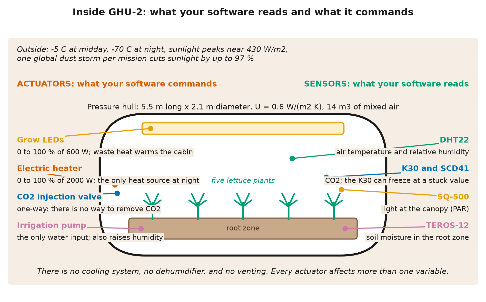
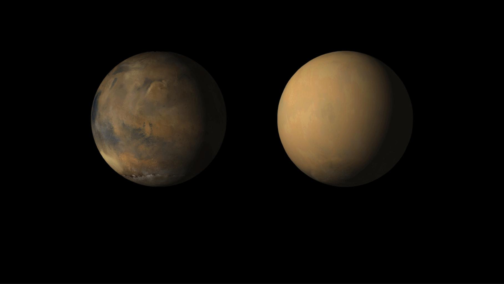
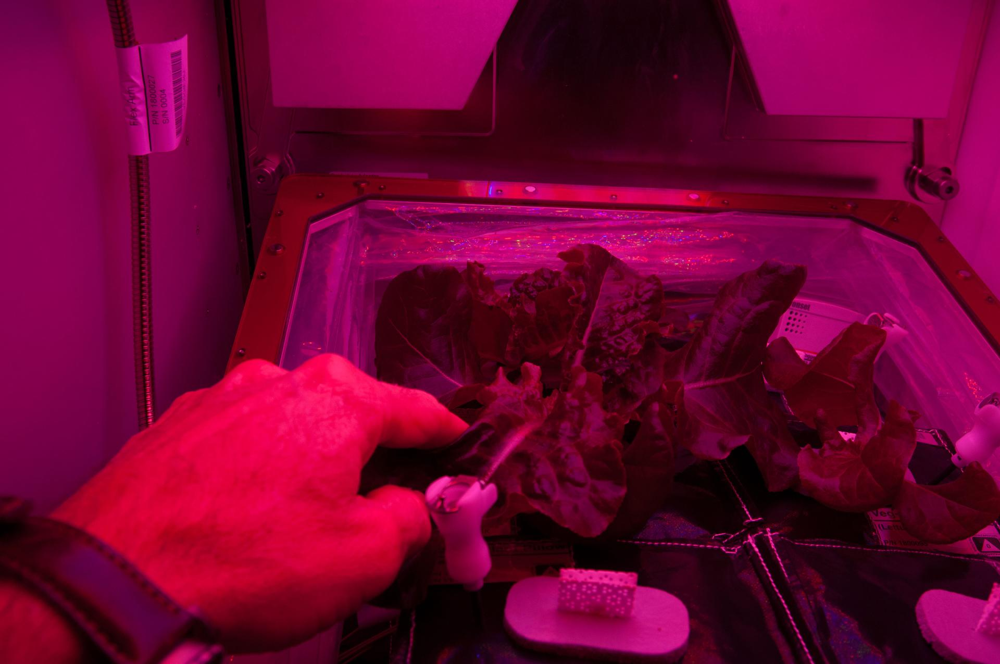
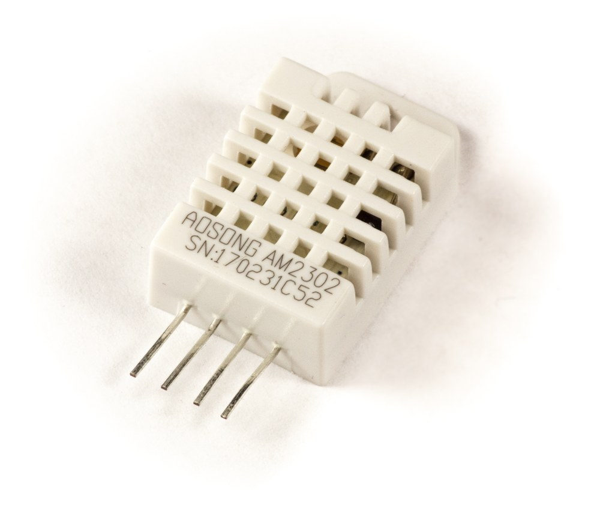

Oct 08, 2026 | 1112 words | 11 min read
14. Mission Brief#
At a Glance
What you will do: Read the client’s memo and the technical annex below. Every deliverable in this project is based on this brief.
What you will submit: Nothing yet. In Milestone 1 you analyze this brief individually and as a team.
14.1. Memorandum#
To: |
Environmental Controls Engineering Team |
From: |
Dr. Imani Okafor, Crew Systems Lead, Ares Program Mission Control |
Re: |
GHU-2 Environmental Control Software: Request for Engineering Services |
The Ares Surface Agriculture Program operates deployable greenhouse units that will supply fresh food to future Mars surface crews. Eight months ago we landed our first unit, Greenhouse Unit 1 (GHU-1), with a crop of lettuce (Lactuca sativa). A contractor who is no longer with the program wrote its automated controller quickly, under schedule pressure.
GHU-1 lost its entire crop in the first week of automated operation. We recovered the complete sensor and actuator log from the unit and will provide it to your team. Finding the cause of the crop loss is part of your work for us.
The replacement unit, GHU-2, uses the same hull, sensors, and actuators. It launches at the end of this academic term. Two parts of its hardware are not yet decided: the wall glazing and the heater. We will fly the combination your team specifies, within a launch-mass limit. We need your team to deliver two items.
Environmental control software for GHU-2 that keeps a lettuce crop alive and productive through a 30-sol surface mission, including the expected dust storm and sensor faults. We will accept the software only if it passes our acceptance test: a simulated 30-sol mission on the glazing and heater your team specifies, scored against the performance criteria in the technical annex.
An engineering memo that documents your investigation of the GHU-1 failure, your hardware selection, your control approach, and the reasons for each. Include a procedure detailed enough that program engineers who have never met your team can run, evaluate, and modify your controller on future missions.
Mission software must behave the same way every time it is reviewed. Your controller must therefore be deterministic: given the same conditions, it makes the same decisions.
We look forward to your problem scoping and your questions.
Dr. Okafor
14.2. Technical Annex#

Fig. 14.1 GHU-2 in cutaway. Five lettuce plants grow in a root zone under ceiling grow LEDs. The actuators (grow LEDs, heater, CO2 valve, irrigation pump) are labeled on the left and the sensors (DHT22, K30, SCD41, SQ-500, TEROS-12) on the right. Several actuators affect more than one variable. The tables below list the same hardware in detail.#
14.2.1. The Greenhouse#
GHU-2 is a deployable rigid cylinder. The crop zone holds five lettuce plants in an actively mixed air volume.
Parameter |
Value |
|---|---|
Cylinder dimensions |
5.5 \(\text{m}\) long x 2.1 \(\text{m}\) diameter |
Surface area |
\(43.2\ \text{m}^2\) |
Actively mixed air volume |
\(14\ \text{m}^3\) |
Internal pressure |
\(100\ \text{kPa}\) |
Wall glazing |
Your team’s selection (as built: twin-wall polycarbonate, \(U = 0.6\ \text{W}/(\text{m}^2 \cdot \text{K})\)) |
14.2.2. The Martian Environment#

Fig. 14.2 The same hemisphere of Mars before and during the 2018 planet-encircling dust storm, imaged by the Mars Color Imager on NASA’s Mars Reconnaissance Orbiter. A storm like this one can cut the sunlight reaching the surface by up to 97 percent. Image source: NASA/JPL-Caltech/MSSS.#
Each sol, the outside temperature swings from about \(-5\ ^\circ\text{C}\) at midday to \(-70\ ^\circ\text{C}\) at night.
Sunlight at the surface peaks at about \(430\ \text{W}/\text{m}^2\) on a clear sol, less than half of the value on Earth.
One global dust storm is expected during any 30-sol mission. Storms last 2 to 5 sols and can cut sunlight by up to 97 %.
14.2.3. Crop Requirements (Lettuce)#

Fig. 14.3 A member of the Expedition 40 crew tends ‘Outredgeous’ lettuce (Lactuca sativa) in the Vegetable Production System aboard the International Space Station. The plants root in fabric pillows. The magenta light comes from the red and blue LEDs that drive photosynthesis. Image source: NASA.#
Variable |
Requirement |
|---|---|
Air temperature |
\(23\ ^\circ\text{C}\) during the day, \(18\ ^\circ\text{C}\) at night |
CO2 concentration |
800 to 1000 \(\text{ppm}\) |
Relative humidity |
40 to 60 % |
Soil moisture |
Keep the root zone from drying out or waterlogging |
Lettuce survives short excursions outside these ranges. The conditions in the table below kill the crop. Exposure to each condition builds up while the condition lasts, and the crop dies when the exposure reaches the time listed. When conditions return to normal, the built-up exposure decays gradually.
Lethal condition |
Crop dies after |
|---|---|
Air temperature below \(5\ ^\circ\text{C}\) |
2 hours |
Air temperature above \(40\ ^\circ\text{C}\) |
1 hour |
Soil moisture below 0.10 VWC (drought) |
1 sol |
Soil moisture above 0.70 VWC (waterlogging) |
0.5 sol |
Light at the canopy below 150 \(\mu\text{mol}/(\text{m}^2 \cdot \text{s})\) |
2 sols |
Normal night-time darkness counts toward the light limit, and it decays again during the day while the canopy receives enough light.
GHU-2 shares an airlock with crew spaces. CO2 at or above \(5000\ \text{ppm}\) for 30 consecutive minutes is a toxicity event for the crew, and a toxicity event fails the acceptance test automatically.
14.2.4. The Hardware Your Software Controls#
Actuator |
Range |
Notes |
|---|---|---|
Electric heater |
0 to 100 % of its rated power |
The only heat source at night; rated \(2000\ \text{W}\) as built |
Grow LEDs |
0 to 100 % of \(600\ \text{W}\) |
Supplements sunlight; waste heat enters the cabin |
CO2 injection valve |
0 to 100 % |
One-way: there is no way to remove CO2 |
Irrigation pump |
0 to 100 % |
The only water input; irrigation also raises humidity |
GHU-2 has no cooling system and no dehumidifier. Your software cannot vent the greenhouse to the Martian atmosphere.
14.2.5. Hardware Your Team Selects#
Item |
Options |
Trade-off |
|---|---|---|
Wall glazing |
Four options, from single-layer polycarbonate to an opaque vacuum-insulated panel |
Better insulation passes less sunlight and weighs more |
Heater |
\(2000\ \text{W}\) (as built) or \(3000\ \text{W}\) |
The larger heater weighs more and draws more power |
Battery |
Sized by your team |
Must run the heater and LEDs through a dust-storm sol with the solar arrays dark |
The glazing, heater, and battery together must not exceed \(600\ \text{kg}\) of launch mass. Launch costs about 50,000 USD per kilogram. Full data for each option are in Milestone 2, Activity 3, where your team also measures the heat loss of the as-built wall.
14.2.6. The Sensors Your Software Reads#


Fig. 14.4 The DHT22 temperature and humidity sensor, in its cased AM2302 form. The sensors on GHU-2 are ordinary commercial parts. Their readings include noise, and they can fail. Image source: Ubahnverleih via Wikimedia Commons, released under CC0.#
Sensor |
Measures |
Known issues |
|---|---|---|
DHT22 |
Air temperature and relative humidity |
Normal measurement noise |
K30 (primary) |
CO2 (\(\text{ppm}\)) |
Has frozen in the field; see below |
SCD41 (backup) |
CO2 (\(\text{ppm}\)) |
Reliable; normal noise |
TEROS-12 |
Soil moisture (volumetric water content) |
Normal noise |
SQ-500 |
Light level at the canopy (PAR, \(\mu\text{mol}/(\text{m}^2 \cdot \text{s})\)) |
Normal noise |
On GHU-1-class hardware, the K30 CO2 sensor sometimes freezes and reports a stuck value until it recovers. The SCD41 backup sensor is installed so that software can detect this fault and keep operating. Your team decides how the software uses the two sensors. The acceptance test includes K30 freezes.
14.2.7. Acceptance Test#
Program engineers will run your controller through a standard simulated 30-sol mission. They will score it on mission completion, crop survival, temperature tracking, CO2 control, humidity control, CO2 safety, determinism, and launch mass.
Your team receives the same simulation and the full scoring criteria, so you can run the acceptance test yourselves at any time during development. Final grading may use a different random weather and fault schedule than your practice runs. A controller tuned to a single practice run may fail the graded run.